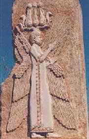

86 CYRUS YANG AGUNG ± 590 SM-529
SM
Dia ini --Cyrus
Yang Agung-- pendiri Kekaisaran Persia. Mulai kariernya
selaku pejabat rendahan di bagian barat daya Iran, dia
menghalau --melalui kemenangan-kemenangan pertempuran yang
cemerlangan-- tiga kerajaan besar (Medes, Lydian, dan
Babilon), dan menyatukan hampir seluruh daerah Timur Tengah
lama menjadi satu negara yang membentang mulai India hingga
Laut Tengah.
Cyrus (atau Kurush nama Persinya) dilahirkan sekitar
tahun 590 SM di propinsi Persis (kini Fars), di barat daya
Iran. Daerah ini saat itu merupakan propinsi Kerajaan Medes.
Cyrus berasal dari keturunan penguasa lokal yang merupakan
bawahan Raja Medes.
Tradisi yang timbul belakangan bikin dongeng menarik
menyangkut diri Cyrus ini, seakan-akan mengingatkan orang
akan dongeng Yunani mengenai Raja Oedipus. Menurut dongeng
ini, Cyrus adalah cucu Astyages Raja Medes. Sebelum Cyrus
lahir, Astyages mimpi bahwa cucunya suatu saat akan
menghalaunya dari tahta. Raja keluarkan perintah supaya
semua bayi yang baru lahir dibunuh habis. Tetapi, pejabat
yang dipercaya melakukan pembunuhan itu tak sampai hati
melakukan pembunuhan durjana itu, tetapi diteruskannya
perintah itu kepada penggembala dan istrinya supaya
melaksanakannya. Namun mereka ini pun tak sampai hati.
Mereka bukannya membunuh bayi lelaki melainkan memeliharanya
sebagai anak sendiri. Akhirnya, ketika sang bocah tumbuh
dewasa, memang betul-betul dia menumbangkan raja dari
tahtanya.
Bangsa Medes dan Persia berdekatan satu sama lain, baik
disebabkan asal-usul maupun persamaan bahasa. Karena Cyrus
tetap meneruskan sebagian besar hukum-hukum Medes dan
sebagian besar prosedur administrasi pemerintahan,
kemenangannya atas Medes hanyalah merupakan sekedar
perubahan dinasti dan bukannya suatu penaklukan oleh bangsa
asing.
Tetapi, Cyrus segera menampakkan keinginannya melakukan
penaklukan ke luar. Sasaran pertamanya adalah Kerajaan
Lydian di Asia Kecil, dikuasai oleh Raja Croesus, seorang
yang kekayaannya seperti dongeng. Besi Cyrus tak ada artinya
jika dibandingkan emasnya Croesus. Menjelang tahun 546 SM
Cyrus menaklukkan Kerajaan Lydian dan menjebloskan Croesus
ke dalam bui.
Cyrus kemudian mengalihkan perhatiannya ke jurusan timur,
dan dalam serentetan pertempuran, dia taklukkan semua bagian
timur Iran dan dimasukkannya ke dalam wilayah kekuasaan
kerajaannya. Pada tahun 540 SM, Kekaisaran Persia membentang
ke timur sejauh Sungai Indus dan Jaxartes (kini Syr Darya di
Asia Tengah).
Dengan terlindungnya bagian belakang. Cyrus dapat
memusatkan perhatian pada yang paling berharga dari
segalanya. Kekaisaran Babylon yang makmur loh jinawi,
terletak di pusat Mesopotamia tetapi dapat mengawasi segenap
daerah "bulan sabit subur" (Fertile Crescent) Timur Tengah.
Tidak seperti Cyrus, penguasa Babylon Nabonidus tidaklah
populer di kalangan rakyat. Tatkala tentara Cyrus maju
bergerak, pasukan Babylon bertekuk di lutut Cyrus tanpa
suatu perlawanan. Karena Kekaisaran Babylon meliputi juga
Suriah dan Palestina, kedua daerah ini pun dimasukkan ke
dalam wilayah kekuasaan Cyrus.
Cyrus menghabiskan waktu beberapa tahun untuk
mengkonsolidasi penguasaannya dan mengorganisir kembali
kekaisaran yang begitu besar yang telah direbutnya. Kemudian
dia pimpin Angkatan Bersenjata menuju timur laut menaklukkan
Massagetae, suku nomad yang hidup di Asia Tengah sebelah
timur laut Caspia. Orang-orang Persia peroleh kemenangan
pada saat-saat kontak senjata pertama. Tetapi pada
pertempuran kedua, pertempuran tahun 529 SM, mereka
terkalahkan dan Cyrus --penguasa kekaisaran di dunia yang
pernah ada saat itu-- terbunuh.
Cyrus digantikan oleh puteranya Cambyses II. Cambyses
mengalahkan Massagate dalam pertempuran berikutnya,
menemukan mayat ayahnya dan menguburnya kembali di
Pasargadae, ibukota Persia kuno. Kemudian Cambyses mengirim
pasukan untuk penyerbuan Mesir, sehingga dengan demikian dia
menyatukan segenap daerah Timur Tengah lama dalam satu
kekaisaran.
Cyrus jelas seorang pemimpin yang punya kebolehan bidang
militer. Tetapi itu cuma satu sisi dari seorang manusia.
Yang lebih menonjol, mungkin, adalah kebijakan cara
memerintahnya. Dia terkenal amat toleran terhadap
agama-agama setempat dan juga adat-istiadat mereka. Dan dia
senantiasa menjauhkan diri dari sikap kejam dan ganas
seperti lazimnya para penakluk. Orang-orang Babylon,
misalnya, bahkan lebih kentara lagi orang Assyria, telah
membunuh beribu-ribu manusia dan mengusir semua penduduk
yang dikuatirkan bakal berontak. Misalnya, ketika Babylon
menaklukkan Yudea tahun 586 SM, mereka memboyong orang Yudea
ke Babylon. Tetapi lima puluh tahun kemudian, sesudah Cyrus
menaklukkan Babylon, dia beri ijin orang-orang Yahudi
kembali ke kampung halamannya. Kalau tidak karena Cyrus,
rasanya orang-orang Yahudi itu akan musnah sebagai kelompok
yang terasing di abad ke-5 SM. Keputusan Cyrus dalam hal ini
mungkin punya motivasi politik: bagaimanapun sedikit sekali
keraguan bahwa dia merupakan seorang penguasa yang
berprikemanusiaan pada jamannya. Bahkan orang-orang Yunani,
yang lama sekali menganggap bangsa Kekaisaran Persia
merupakan ancaman terbesar bagi kemerdekaannya, tak pernah
berhenti menganggap Cyrus seorang penguasa yang betul-betul
mengagumkan.
Begitu baiknya Cyrus telah menjalankan tugasnya sehingga
bahkan sesudah matinya pun Kekaisaran Persia meneruskan
perluasan daerah kekuasaannya. Ini berlangsung selama
kira-kira 200 tahun, sampai ditaklukkan oleh Alexander yang
Agung. Hampir sepanjang dua abad, daerah yang dikuasai
Persia menikmati perdamaian dan kemakmuran.
Penaklukan oleh Alexander samasekali bukan pertanda
tamatnya Kekaisaran Persia. Sesudah Alexander meninggal
dunia, salah seorang jendralnya, Seleucus I Nicator,
berhasil menguasai Suriah, Mesopotamia, dan Iran, dengan
demikian dia mendirikan Kekaisaran Seleucid. Tetapi,
kekuasaan asing atas Iran tidaklah berlangsung lama. Di
pertengahan abad ke-3 SM pecah pemberontakan melawan
kekuasaan Seleucid, di bawah pimpinan Arsaves I yang
menganggap diri keturunan Achaemenid (dinasti Cyrus). Sebuah
kerajaan didirikan oleh Arsaces dikenal dengan nama
Kekaisaran Parthian akhirnya menguasai Iran dan Mesopotamia.
Tahun 224 sesudah Masehi penguasa Arsacid digantikan dinasti
Persia, Sassanid, yang juga mengaku keturunan dari
Archaeminid, dan yang kekaisarannya berlangsung lebih dari
empat abad. Bahkan kini Cyrus dihormati di Iran sebagai
pendiri negara Persia.
Karier Cyrus Yang Agung merupakan contoh penting titik
balik dalam sejarah. Kebudayaan pertama kalinya tumbuh di
Sumeria, sekitar 3000 tahun SM. Selama lebih dari dua puluh
lima abad bangsa Sumeria dan pelbagai bangsa Semit yang
menggantikannya (seperti bangsa Akkadian, Babylonia dan
Assyria) menjadi pusat peradaban. Sepanjang masa itu,
Mesopotamia merupakan negeri yang terkaya dan paling
berkebudayaan maju di dunia (dengan kekecualian Mesir yang
secara kasar berada dalam tarap sejaiar). Tetapi karier
Cyrus --yang boleh dibilang berada di tengah-tengah sejarah
tercatat-- mengakhiri babak itu dalam sejarah dunia. Dari
sejak itu selanjutnya, baik Mesopotamia maupun Mesir
bukanlah lagi pusat budaya dunia, baik kultural maupun
politik.
Lebih jauh dari itu, bangsa Semit --yang berjumlah besar
di daerah "bulan sabit subur"-- tak bisa peroleh kembali
kemerdekaannya berabad-abad sesudah itu. Sesudah bangsa
Persia (bangsa Indo-Eropa) datang bangsa Macedonia dan
Yunani, diikuti oleh pendudukan lama oleh orang Parthian,
Romawi, penguasa Sassanid, kesemuanya itu adalah IndoEropa.
Hingga penaklukan oleh kaum Muslimin di abad ke-7 --hampir
dua belas abad sesudah Cyrus Yang Agung--daerah "bulan sabit
yang subur" itu dikuasai oleh bangsa Semit.
Peta Kerajaan Cyrus yang Agung
Cyrus penting bukan cuma karena dia memenangkan banyak
pertempuran dan menaklukkan banyak daerah. Arti pentingnya
yang lebih besar adalah fakta bahwa kekaisaran yang
didirikannya secara mantap mengubah struktur politik dunia
lama.
Kekaisaran Persia, di samping luasnya daerah dan lamanya
bertahan, tidaklah punya pengaruh besar dalam sejarah
seperti yang dijumpai pada Kekaisaran Romawi. Inggris, atau
Cina yang lebih lama. Tetapi, memperhitungkan arti penting
Cyrus orang harus ingat bahwa dia sudah merampungkan sesuatu
yang mungkin tak akan pernah terjadi tanpa kehadirannya. Di
tahun 620 SM (segenerasi sebelum Cyrus lahir) tak seorang
akan menduga bahwa dalam tempo seabad seluruh dunia lama
akan berada di bawah kekuasaan suatu suku yang sama sekali
tidak terkenal yang berasal dari barat daya Iran. Bahkan
dengan melihat ke belakang, tak ada tampak bahwa Kekaisaran
Persia salah satu kekaisaran yang punya arti penting sejarah
yang karena keadaan sosial dan ekonominya akan bisa jadi
begitu cepat atau lambat jadi besar. Jadi, Cyrus merupakan
salah seorang yang langka yang dengan nyata mengubah
jalannya sejarah.
|